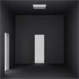

Laberinto 3D
Descripción|  | Este es el puzzle principal de la aplicación. Se trata de un laberinto tridimensional. El laberinto tiene forma de cubo de Rubik: una serie de habitaciones cúbicas para formar un gran cubo de 3x3x3 habitaciones. No es complicado extender la búsqueda, la heurística y la función de coste a un laberinto de mayor tamaño. |
En principio, se puede abrir una puerta en cualquier pared de cualquier habitación, salvo que forme parte de una pared exterior, o se haya fallado en el intento de abrirla y esté bloqueada.
Para abrir una puerta, hay que resolver un puzzle. Una vez resuelto, se puede pasar por la puerta, pero si no se consigue resolver, la puerta se bloquea y el jugador tendrá que buscar un camino alternativo.
El laberinto tiene salidas en las cuatro esquinas del cubo.
RepresentaciónPara representar el estado de las puertas del puzzle hemos utilizado tres arrays de arrays bidimensionales [sic]. Hubiera sido igual utilizar matrices tridimensionales, pero esta visión es igual de eficiente y facilita la comprensión del código.
De otra manera, un array representa una dimensión y contiene las paredes perpendiculares a esa dimensión. Las paredes son arrays bidimensionales que contienen el estado de las puertas, que puede ser:
- -1: bloqueada
- 0: cerrada
- 1: abierta
El estado también almacena la posición actual del jugador.
El estado inicial del laberinto es con todas las puertas cerradas (0) y el aventurero en la posición que se desee. Por defecto, en el centro del laberinto. El estado final es cuando la posición del aventurero corresponde con una casilla de salida.
EstrategiasSe ha implementado una función de coste que intenta evitar pasar innecesariamente por una puerta cerrada (i.e. resolver un puzzle). Se asigna a la acción de cruzar una puerta cerrada un coste de 5, mientras que una puerta abierta tiene un coste de 1. Dicho de otra forma, es preferible dar una pequeña vuelta que tener que resolver un puzzle.
Sobre esto se añade una función heurística que se calcula como la distancia de Manhattan desde la posición actual a cualquiera de las salidas.
Dado que la heurística es admisible, siempre se encuentra el camino óptimo a la salida, utilizando el algoritmo A*. Aunque no sería difícil de implementar, para evitar sobrecargar el interfaz, este es el único puzzle que no permite elección de estrategia.